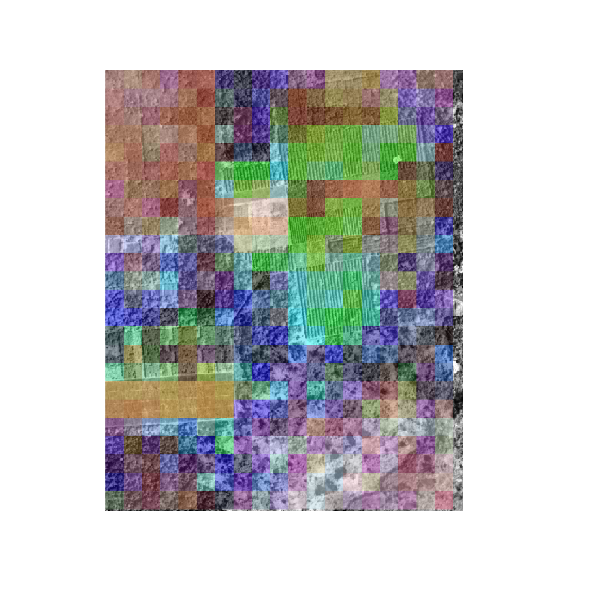
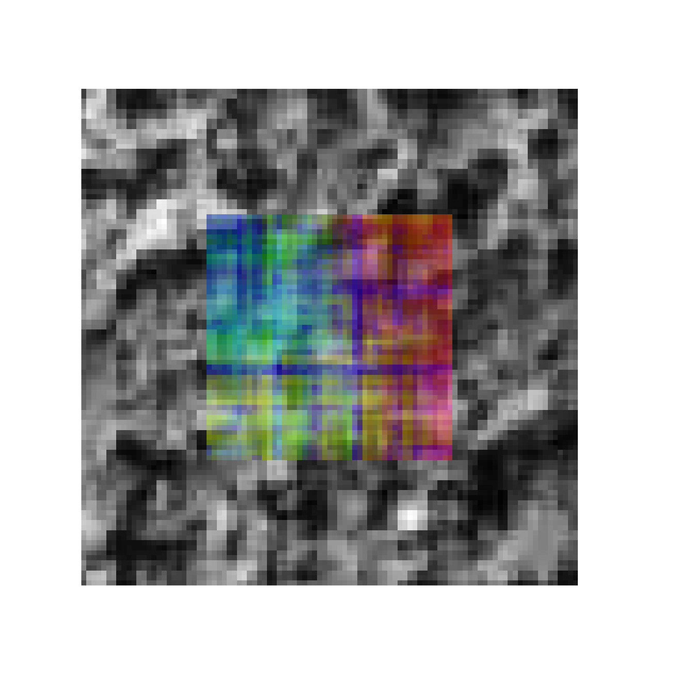

The FOTO (Fourier Transform Textural Ordination) method uses a principal component analysis (PCA) on radially averaged 2D fourier spectra to characterize (greyscale) image texture (of canopies).
The original implementation used discrete zones (blocks of x pixels wide, window_size parameter) to classify an image. This original implementation is the default, and the least computationally intensive, as it effectively reduces to resolution of the orignal data. In short, data is aggregated at the size of the specified window.
An additional, moving window, approach is provided which returns an object of the same resolution as the original image by overlyaing a moving window (see window_size parameter) over every pixel in the image. This methods is computationally intesive and should be used with care (as processing can take a long time).
The zoned approach on the foto() routine returns a nested list with the source data (aggregation zones, radial spectra) and a final colour image consisting of the three major principal components for every pixel. An example analysis is run below.
library(foto)
# load demo data
r <- raster::raster(sprintf("%s/extdata/yangambi.png", path.package("foto")))
# classify pixels using zones (discrete steps)
output <- foto(r,
plot = TRUE,
window_size = 25,
method = "zones")
In the resulting image pixels with a similar colour have a similar texture. The analysis is run a historical image of plantations near Yangambi, DR Congo. The regular pattern of planted trees is picked up readily by the algorithm.
Below you find an example analyis for a subsection of the processed image above. The output format of the moving window analysis is consistent with that of the zoned approach.
# crop the image for speed
r <- crop(r, extent(1,100,1,100))
# crop the image
output <- foto(r,
plot = TRUE,
window_size = 25,
method = "mw")
#> A moving window approach is computationally intensive.
#> This might take a while.
Advanced processing such as partiotioned normalization as described in Barbier et al. 2010 is currently not provided in the package. I refer to this paper for the appropriate routines and the raw foto() outputs for the necessary data sources.